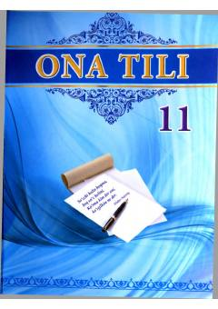

1O11-sinf o'quvchilari uchun ona tili va nutq madaniyati darsligi.
Mazkur darslik umumta'lim maktablarining 11-sinf o'quvchilari uchun mo'ljallangan bo'lib, nutq madaniyati, o'zbek tilining taraqqiyoti va uning lug'at boyligidagi o'zgarishlarni o'rgatadi. Kitobda muloqot madaniyati, kommunikativ sifatlar hamda tilimizdagi yangi so'zlar va ularning ishlatilishiga oid nazariy va amaliy topshiriqlar berilgan.